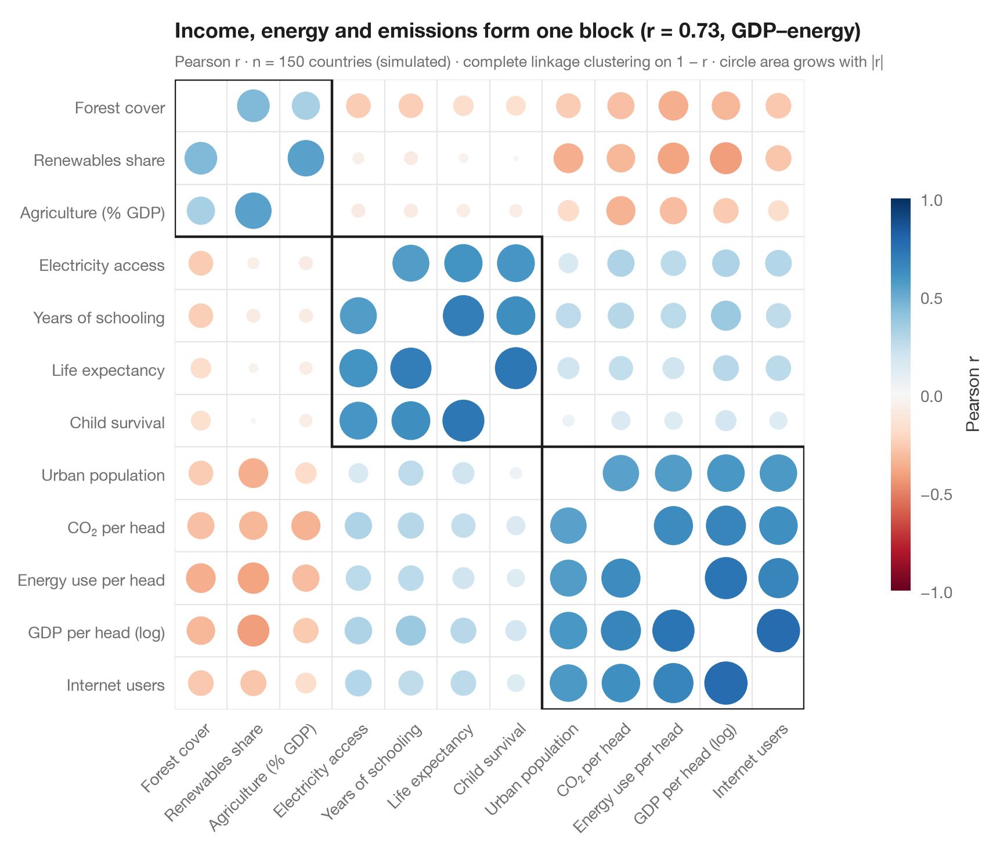

Correlogram with clustering
Corrplot-style circles sized and coloured by r for 13 school-district indicators, ordered by hierarchical clustering.

The Python counterpart of corrplot(method = "circle", order = "hclust"). Each
circle's area grows with |r| and its colour gives the sign, so strong
correlations pop out and weak ones fade. The variables are reordered by
hierarchical clustering (complete linkage on the distance 1 − r), which
pulls positively correlated variables into blocks along the diagonal; the boxes
outline the three clusters, like addrect = 3. Here low-income, Hispanic pupils
and minority teachers form one block, and math results correlate negatively with
all three.
Data are 13 indicators for the 303 California school districts of the STAR98
test bundled with statsmodels (sm.datasets.star98): math results (share
of pupils above the national median), pupil composition (low-income, Hispanic,
Black and Asian pupils), teachers (minority share, experience, salary), resources
(spending per pupil, pupil–teacher ratio) and school organisation (college-prep
courses, charter and year-round schools). The ordering comes from
scipy.cluster.hierarchy.linkage and leaves_list, the boxes from fcluster.
import matplotlib.pyplot as plt
import numpy as np
import statsmodels.api as sm
from matplotlib.patches import Circle, Rectangle
from scipy.cluster.hierarchy import fcluster, leaves_list, linkage
from scipy.spatial.distance import squareform
# Data: 13 indicators for 303 California school districts (STAR98, bundled with statsmodels)
df = sm.datasets.star98.load_pandas().data
df["MATH"] = 100 * df.NABOVE / (df.NABOVE + df.NBELOW)
labels = {"MATH": "Math above median", "LOWINC": "Low-income pupils",
"PERHISP": "Hispanic pupils", "PERBLACK": "Black pupils",
"PERASIAN": "Asian pupils", "PERMINTE": "Minority teachers",
"AVYRSEXP": "Teacher experience", "AVSALK": "Teacher salary",
"PERSPENK": "Spending per pupil", "PTRATIO": "Pupil–teacher ratio",
"PCTAF": "College-prep courses", "PCTCHRT": "Charter schools",
"PCTYRRND": "Year-round schools"}
df = df[list(labels)].rename(columns=labels)
corr = df.corr()
# Hierarchical clustering on the distance 1 - r, then reorder the matrix
Z = linkage(squareform(1 - corr.to_numpy(), checks=False), method="complete")
order = leaves_list(Z)
corr = corr.iloc[order, order]
clusters = fcluster(Z, t=3, criterion="maxclust")[order]
k = len(corr)
fig, ax = plt.subplots(figsize=(8.4, 7.2))
cmap, norm = plt.get_cmap("RdBu"), plt.Normalize(-1, 1)
for i in range(k):
for j in range(k):
r = corr.iat[i, j]
if i == j:
continue
ax.add_patch(Circle((j, i), radius=0.47 * np.sqrt(abs(r)), color=cmap(norm(r)), lw=0))
# Boxes around the clusters (consecutive runs along the diagonal)
start = 0
for idx in range(1, k + 1):
if idx == k or clusters[idx] != clusters[start]:
ax.add_patch(Rectangle((start - 0.5, start - 0.5), idx - start, idx - start,
fill=False, ec="#1D1D1F", lw=1.6))
start = idx
ax.set_xticks(range(k), corr.columns, rotation=45, ha="right", rotation_mode="anchor")
ax.set_yticks(range(k), corr.index)
ax.set_xticks(np.arange(-0.5, k), minor=True)
ax.set_yticks(np.arange(-0.5, k), minor=True)
ax.grid(which="minor", color="#E5E5EA", lw=0.8)
ax.grid(which="major", visible=False)
ax.tick_params(which="minor", length=0)
ax.set_xlim(-0.5, k - 0.5)
ax.set_ylim(k - 0.5, -0.5)
ax.set_aspect("equal")
for s in ax.spines.values():
s.set_visible(False)
cb = fig.colorbar(plt.cm.ScalarMappable(norm=norm, cmap=cmap), ax=ax, shrink=0.6, pad=0.02,
ticks=[-1, -0.5, 0, 0.5, 1])
cb.set_label("Pearson r", color="#3A3A3C")
cb.outline.set_visible(False)
r_pov = corr.loc["Math above median", "Low-income pupils"]
ax.set_title(f"Math results run against the poverty block (r = {r_pov:.2f} with low income)", pad=26)
ax.text(0, 1.02, f"Pearson r · n = {len(df)} school districts · complete-linkage clustering on 1 − r · "
"circle area grows with |r|", transform=ax.transAxes, fontsize=9.5, color="#6E6E73")
plt.show()
Figures use the optional PyStatlas style: add plt.style.use("pystatlas.mplstyle") to match the look exactly.
Data source
- California STAR test results, 1998 (303 school districts). Gill, J. (2001). Generalized Linear Models: A Unified Approach (Quantitative Applications in the Social Sciences, No. 134). Sage. https://www.statsmodels.org/stable/datasets/generated/star98.html
Original data from the California Department of Education's Standardized Testing and Reporting (STAR) program, 1998. Subset distributed with statsmodels (sm.datasets.star98) with the author's permission.
The examples illustrate statistical methods. Their titles describe what each figure shows in these particular data — often a small, dated or partial sample — not the author's position on the substantive question. For interpretation, context and data quality, rely on the original sources cited here.
How to cite
PyStatlas is created and maintained by Thierry Warin. If it helped your work, please cite it.
Warin, T. (2026). Correlogram with clustering. In PyStatlas: A Python Gallery of Statistical Graphics for the Social Sciences. https://warint.github.io/pystatlas/correlation/correlogram-bubble/
@misc{warin2026statlas,
author = {Warin, Thierry},
title = {PyStatlas: A Python Gallery of Statistical Graphics for the Social Sciences},
year = {2026},
howpublished = {\url{https://warint.github.io/pystatlas/}},
note = {Source code: https://github.com/warint/pystatlas}
}More in Correlation & association

Correlation matrix
Lower-triangle Pearson correlation heatmap; non-significant cells (Holm) are crossed out.
ggstatsplot::ggcorrmat()
Scatterplot with statistics
Low-income pupils vs math results in 303 California districts — scatter, OLS line with 95% band, marginal histograms and Pearson's r.
ggstatsplot::ggscatterstats()
Pairs plot with correlations
Scatter matrix of four school-district variables, with group KDEs on the diagonal and pooled vs within-group correlations above it.
GGally::ggpairs()